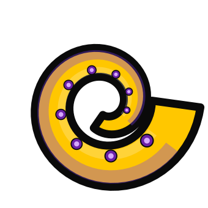

Years
"FREEDOM LIES
IN BEING BOLD."

Hello,
Octobia Media is a multimedia design studio founded and led by Toby Lakeman — a motion designer, video editor, videographer, graphic designer and client liaison with 25 years of experience across the design, marketing, and video industries. We're passionate about design, storytelling, and creating content that connects with audiences and delivers meaningful results.
We bring a proactive, creative, and solutions-focused approach to every project, while genuinely valuing collaboration and the ideas of others. The best outcomes come from asking thoughtful questions, staying curious, and continually looking for better ways to work.
For us, that means constantly asking:
"What are we doing? Why are we doing it this way? Is there a better approach? How can we keep growing? And how can we create the best possible experience for clients while staying true to our values and achieving strong results?"
This mindset has helped us build lasting client relationships, solve problems creatively, and deliver work that is both effective and engaging.
We'd love the opportunity to bring our experience, creativity, and enthusiasm to your next project.
of experience
brought to life
served
mastered
Meet the
studio lead.
Toby Lakeman
Founder & Creative Director, Octobia Media
Started as a Junior Graphic Designer in 1999, grew into motion, and now works across the full spectrum as a multi-disciplinary designer — brand identity, print, photography and motion, all under one roof.
Experience.
Started as a Junior Graphic Designer. Grew into Motion. Now working across the full spectrum as a multi-disciplinary Multimedia Designer. Content that works.
Multimedia Designer / Video Editor / Videographer
Kings of Neon
Content creation across all channels — social, videography, video editing, graphic design, and the use of AI tools for photo and video manipulation. Front-end web design and CMS, print and signage design, contributing to the company's rebrand.
Multimedia Designer / Videographer / Marketing Assistant
Paul Bennet Airshows
High-impact content and marketing assets for the company and all supported airshows — photography, videography, video editing, social media, and print. Captured on-site content at every airshow and managed front-end web, signage and brand development.
Multimedia Designer / Video Editor / Videographer
Omnia Wheel
Sole designer for content creation across all channels. End-to-end ownership: filming, photography, video, web design (front end), print media and signage for an Australian company making multi-directional wheels with national and international distribution.
Creative Director, Video Editor, Graphic Designer
Independent · Freelance
Direct client work across motion graphics, broadcast, digital marketing and social, adapting tone and treatment for each brand and platform.
Senior Graphic Designer → Senior Motion Designer & Editor
Out of the Square Media
Started as a graphic designer (print, catalogues for Camera House and Paxtons, logos), then evolved into broadcast graphics, Flash animation, web design and video graphics. Self-taught After Effects in the early 2000s. Clients included Perisher, Northern NSW Football, Newcastle Airport, Tamworth Country Music Festival, Greater Bank, Nikon, the Catholic Schools Office (Dancing with the Stars), the Cancer Council and many more.
Graphic Designer
Brilliant Logic
First role out of the TAFE Hunter Design Faculty diploma. Secured full-time employment two weeks before completing the course.
Skills &
expertise.
Software used daily, communication tools we work in, and the soft skills that make collaboration work.
Skills
- Creativity
- Filming & Photography
- Flexibility
- Working in a group
- Time Management
- AI Generation image & video manipulation
Expertise
- After Effects joined at the hip
- DaVinci Resolve editing, colour grading
- Premiere video editing
- Audition sound design
- Photoshop anything's possible
- Illustrator graphics to scale
- InDesign adaptable layouts
- Figma · Canva
Communication
- Slack
- Monday
- Microsoft 365
- Google Workspace